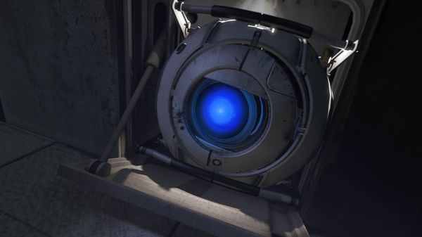
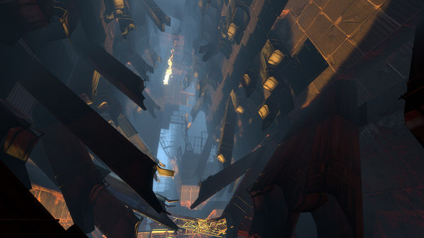
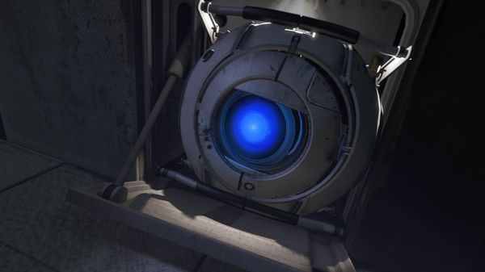
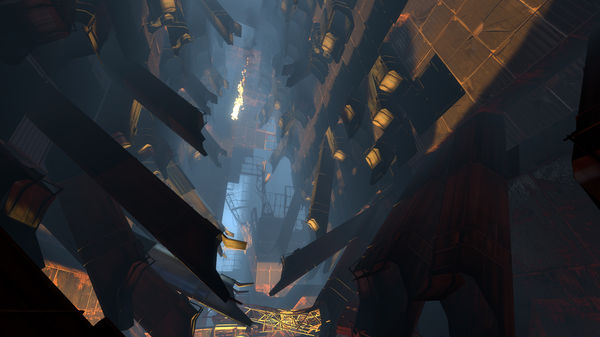

Portal 2 é um jogo de ação/puzzle em primeira pessoa desenvolvido e publicado pela Valve Corporation. O título é uma sequência de Portal (2007)
A campanha de Portal 2 introduz uma gama de novas personagens dinâmicas, vários novos elementos de quebra-cabeças e um maior número de desafiadoras câmaras de teste. Os jogadores explorarão áreas nunca vistas antes dos Laboratórios da Aperture Science e reencontrarão GLaDOS, a companheira robótica com certa tendência assassina que os guiou no jogo original.
O modo cooperativo para dois jogadores oferece uma campanha distinta com história, câmaras de teste e duas novas personagens jogáveis únicas. Este novo modo força os jogadores a reconsiderar tudo que pensavam que sabiam sobre portais. O sucesso exigirá que não somente ajam cooperativamente, mas que pensem cooperativamente.
Em Portal 2, o jogador controla a protagonista, Chell, de uma perspectiva de primeira-pessoa durante o seu desafio de passar por uma série de salas usando a "Aperture Science Handheld Portal Device" ("ASHPD" ou "Portal Gun"; em português, "Arma de Portais"). A Arma de Portais é capaz de criar dois fins distintos de portais, um laranja e um azul. Os portais criam uma conexão visual e física entre dois locais diferentes no espaço tridimensional. Um portal é a entrada e/ou saída do outro portal, e vice-versa; todos os objetos que passam por um portal irão sair pelo outro.